전주시 주거실태조사
전주시 주거실태에 대한 통계를 조회하고 다운로드 받으실 수 있습니다.
통계조회 및 다운로드 바로가기| 목적 | 전주시민의 주거실태, 주거비 부담 수준 등을 조사하여 전주시 주거복지 기본계획수립을 위한 기초자료로 제공 |
| 조사시기 | 기준년도 9~10월 |
| 조사주기 | 5년 |
| 조사내용 | 주거실태, 조거환경, 주거비 부담, 주거복지정책, 가구 현황 5개 부문 |
| 조사대상 | 전주시 내 3,000가구 |
| 조사방법 | 가구방문 면접조사 |
주요 통계
- 가구특성
- 주택유형
- 전주시 거주 이유
- 전주시 거주 기간
- 주거환경 만족도 및 개선 과제
- 주거취약 가구
01
전주시 가구 특성
-
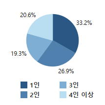
가구원수
-
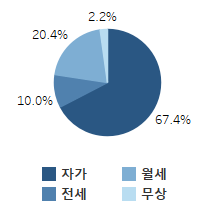
주거점유형태
-
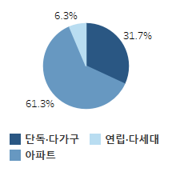
주택유형
-
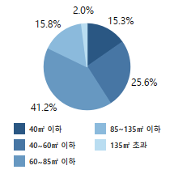
주거 전용면적
-
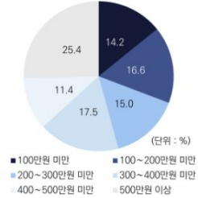
월평균 가구소득
-

주거취약가구
02
가구 특성별 분포
- 전주시 가구는 총 274,416가구이며 완산구 51.9%, 덕진구 48.1%로 분포됨
- 가구원수는 1인(33.2%), 2인(26.9%), 4인 이상(20.6%), 3인(19.3%) 순으로 비율이 높음
- 주택 점유형태는 자가(67.4%), 월세(20.4%), 전세(10.0%), 무상(2.2%) 순임
- 주택유형은 아파트(61.3%), 단독·다가구주택(31.7%), 연립·다세대주택(6.3%) 순임
- 주거 전용면적은 60∼85㎡ 이하(41.2%), 40∼60㎡ 이하(25.6%), 85∼135㎡ 이하(15.8%), 40㎡ 이하(15.3%), 135㎡ 초과(2.0%) 순임
03
월평균 가구소득 구간대별 분포
- 소득 조사 기준은 전년도(2021년)의 세금 등을 제하고 난 실수령액이며, 가구소득은 가구주와 전 가구원의 근로 및 사업 소득, 금융 소득, 부동산 소득, 이전 소득 등의 합계를 의미함
- 500만원 이상(25.4%), 300∼400만원 미만(17.5%), 100∼200만원 미만(16.6%), 200∼300만원 미만(15.0%), 100만원 미만(14.2%), 400∼500만원 미만(11.4%) 순으로 비율이 높음
04
주거취약가구
- 주거취약가구는 전체 가구(274,416가구)의 36.5%(100,080가구)임
- 내국인 가구 35.6%(97,691가구)와 외국인·다문화 가구 0.9%(2,389가구)를 포함함
01
전주시 가구 유형
-
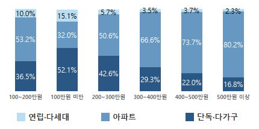
가구원수
-
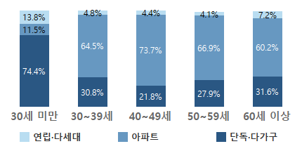
점유형태
-
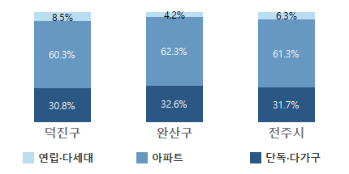
주택유형
- 아파트 거주 비율이 가장 높고, 저소득 가구와 30세 미만 가구에서 단독·다가구주택 거주 비율이 높음
- 가구 소득이 높을수록 아파트 거주비율이 높음
01
지역·점유형태별 전주시 거주 이유
-
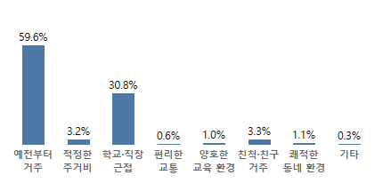
전주시 거주이유
- 전주시에 거주하는 주요 이유는 ‘예전부터 살아와서(59.6%)’와 ‘학교·직장과 근접(30.8%)’임
01
지역·점유형태별 전주시 거주 기간
-
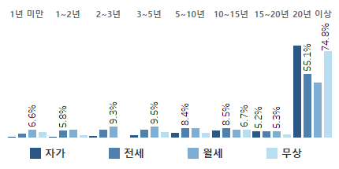
전주시 거주 기간
- 전주시 거주 기간은 ‘20년 이상’ 비율이 70.7%로 크게 높음(완산 76.6%, 덕진 64.9%)
01
주거환경 만족도
-
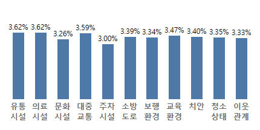
전주시 주거환경 만족도
- 주거환경 만족도는 ‘시장·상점 등 유통시설을 이용하기에 편리하다(3.62점)’와 ‘병원 등 의료시설을 이용하기에 편리하다(3.62점)’가 평점이 가장 높고, ‘주차시설이 양호하다(3.00점)’가 가장 낮음
02
주거환경 개선 과제
-
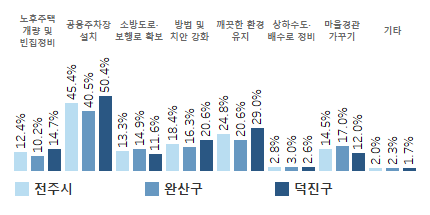
전주시 주거환경 개선 과제
- 주거환경개선을 위해 동네에 필요한 공공시설은 ‘가로등·CCTV(31.5%)’와 ‘체육관·문화관(27.9%)’임
01
주거취약가구 규모 및 비율
| 구분 | 가구수 | 비율 | |
|---|---|---|---|
| 전체가구 | 274,416 | 100.0 | |
| 주거취약가구 | 100,080 | 36.5 | |
| 내국인 | 100,080 | 100,080 | 36.5 |
| 내국인 가구 | 97,691 | 35.6 | |
| 만 65세 이상 1인 가구 | 42.576 | 15.5 | |
| 가구원 중 장애인이 있는 가구 | 19,750 | 7.2 | |
| 공공임대주택 거주 가구 | 16,845 | 6.1 | |
| 조손·한부모 가구 | 3,188 | 1.2 | |
| 국민기초생활보장제도 수급 가구 | 20,079 | 7.3 | |
| 외국인·다문화 | 외국인으로만 이루어진 가구와 가구원 중 외국인 또는 귀화 한국인이 있는 가구 | 2,389 | 0.9 |
- 내국인 가구 비율은 35.6%(97,691가구)이고, 외국인·다문화 가구 비율은 0.9%(2,389가구)임
- 만 65세 이상 1인 가구 비율은 15.5%(42,576가구)임
- 가구원 중 장애인이 있는 가구 비율은 7.2%(19,750가구)임
- 공공임대주택 거주 가구 비율은 6.1%(16,845가구)임
- 조손·한부모 가구 비율은 1.2%(3,188가구)임
- 국민기초생활보장 수급 가구 비율은 7.3%(20,079가구)임
- 기준중위소득 50% 이하 가구 비율은 22.4%(61,358가구)임
인구·가구